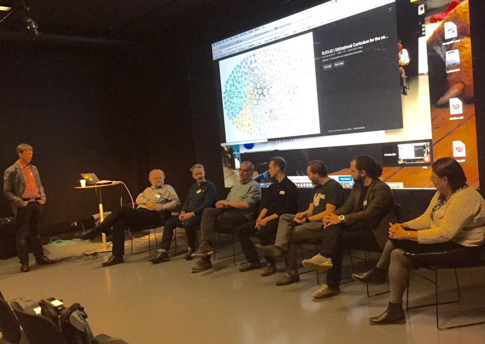

August 2015
@ianmcnicoll :-) On the west coast of Sweden, north of Gothenburg, West of Lilla Kornö google.se/maps/place/Lil…
Off topic, but my other passions beside linked data, semantic web are hiking and kayaking: youtu.be/iWCLNZv58iA via @YouTube
"We should not be satisfied until 100% of clinical trials are disclosed, and we are not there yet." #Alltrials twitter.com/statsguyuk/sta…
Cool: GitHub pages and “YAML-LD" douroucouli.wordpress.com/2015/08/27/a-l… by @chrismungall HT @jamesmalone Ping @druau @goude
Watching the webinar: Axiomatics Bootcamp ABAC 101 axiomatics.com/resources/webi… to learn more about Attribute Based Access Control (#ABAC)
I'm taking Big Data Science with the BD2K-LINCS Data Coordination and Integration Center! coursera.org/course/bd2klin… via @coursera
ICYMI: Material from our #LinkedData meet-up earlier this yrar ait.gu.se/informatik/lin… #LankadeData

"working on a number of innovative projects including the Cochrane Linked Data Project" twitter.com/mavergames/sta…
CTS Ontology Workshop 2015, Ontology in Practice: Clinical and Translational Science ncorwiki.buffalo.edu/index.php/CTS_… Sep 23-25 Ping @nomini
"Work has started within CDISC to create an RDF export facility from the CDISC SHARE metadata repository." github.com/phuse-org/rdf.…
eConsent, should be semantic rich and machine-executable contract/policy, see kerfors.blogspot.se/2013/11/de-ide… twitter.com/transcelerate/…
"Standardized data does NOT equal quality data. However, Standardized data makes it easier to assess data quality." aolivamd.blogspot.se/2015/08/qualit…
Hmm, interesting: my blog post "CSVW for Tabular Clinical Trial Data and Metadata" kerfors.blogspot.se/2015/04/csvw-f… has 100+ hits the last week
Roche is looking for a Information Architect Team Lead, clinical, master and operational data standards #SemanticWeb roche.com/de/careers/job…
“@westurner: Pandas [<]-> CSVW, JSON-LD, RDFa "tables"” Also R and SAS [<]-> CSVW, JSON-LD, RDFa "tables" see kerfors.blogspot.se/2015/04/csvw-f…
Reading a long, nice proposal: #Python #Pandas #LinkedData github.com/pydata/pandas/… from @westurner
I've registered for the #jsonld webinar with @BSletten 13 Aug 8pm CET dataversity.net/aug-13-smart-d… #LinkedData HT @SemanticWeb @aaranged